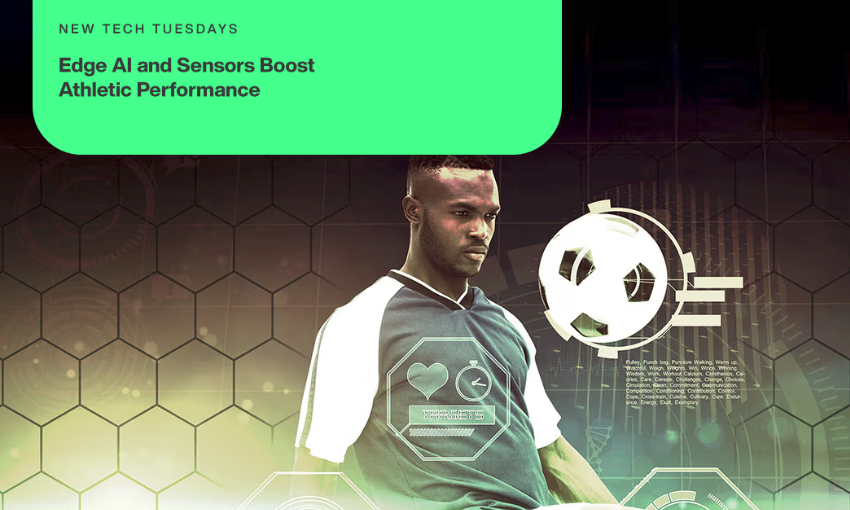
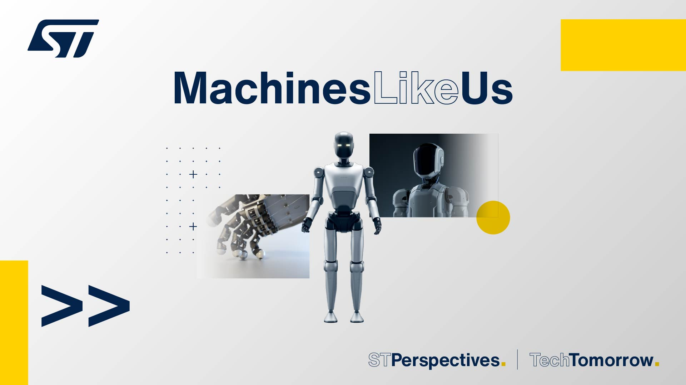

IoT
IA de borda e sensores no esporte
Wearables com sensores e IA embarcada analisam o desempenho de atletas em tempo real, direto no campo, sem esperar pela nuvem.
Ler artigo →Todos os textos do blog, do mais recente para o mais antigo. Cada artigo indica a fonte original em que foi baseado.

Wearables com sensores e IA embarcada analisam o desempenho de atletas em tempo real, direto no campo, sem esperar pela nuvem.
Ler artigo →
Como e-fuses, drivers e PMICs estão substituindo a velha caixa de fusíveis e mudando o caminho da energia dentro do carro.
Ler artigo →
Os humanoides estão chegando às fábricas. Veja quais sensores, motores e circuitos de energia existem por trás da IA.
Ler artigo →
Como montar as portas AND, OR, NOT, NAND e NOR usando apenas transistores BC547, resistores e botões.
Ler artigo →